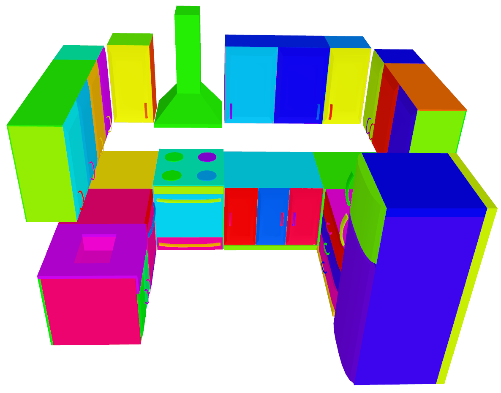

scene_synthesizer.procedural_scenes.kitchen_u_shaped
- scene_synthesizer.procedural_scenes.kitchen_u_shaped(seed=None, **kwargs)
Kitchen scene with a U-shaped counter space.
- Parameters:
seed (int, numpy.random._generator.Generator, optional) – A seed or random number generator. Defaults to None which creates a new default random number generator.
**counter_height (float, optional) – Height of counters.
**counter_depth (float, optinal) – Depth of counters.
**counter_thickness (float, optional) – Thickness of counters.
**wall_cabinet_z (float, optional) – Z-coordinate of bottom of wall cabinets above ground.
**wall_cabinet_height (float, optional) – Height of cabinets hanging on the wall.
**handle_shape_args (dict, optional) – Dictionary of parameters defining the handle shape.
**door_shape_args (dict, optional) – Dictionary of parameters defining the cabinet door shape.
**refrigerator_args (dict, optional) – Dictionary of parameters that are passed to RefrigeratorAsset.
**range_args (dict, optional) – Dictionary of parameters that are passed to RangeAsset.
**range_hood_args (dict, optional) – Dictionary of parameters that are passed to RangeHoodAsset.
**dishwasher_args (dict, optional) – Dictionary of parameters that are passed to DishwasherAsset.
**wall_cabinet_args (dict, optional) – Dictionary of parameters that are passed to all WallCabinetAsset.
**base_cabinet_args (dict, optional) – Dictionary of parameters that are passed to all BaseCabinetAsset.
**base_cabinet_1_args (dict, optional) – Dictionary of parameters that are passed to the first BaseCabinetAsset.
**base_cabinet_2_args (dict, optional) – Dictionary of parameters that are passed to the second BaseCabinetAsset.
- Returns:
The kitchen scene.
- Return type:
{kind=link}